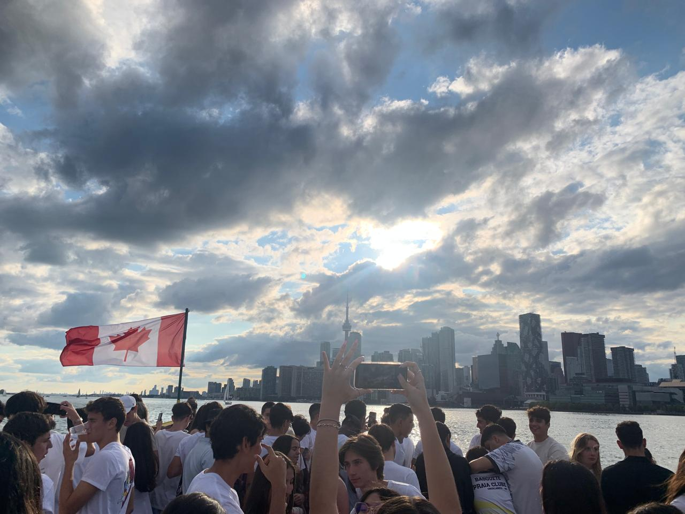
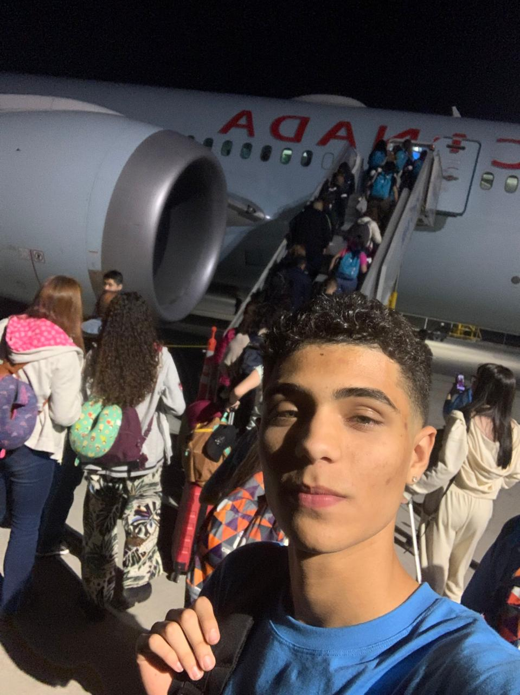
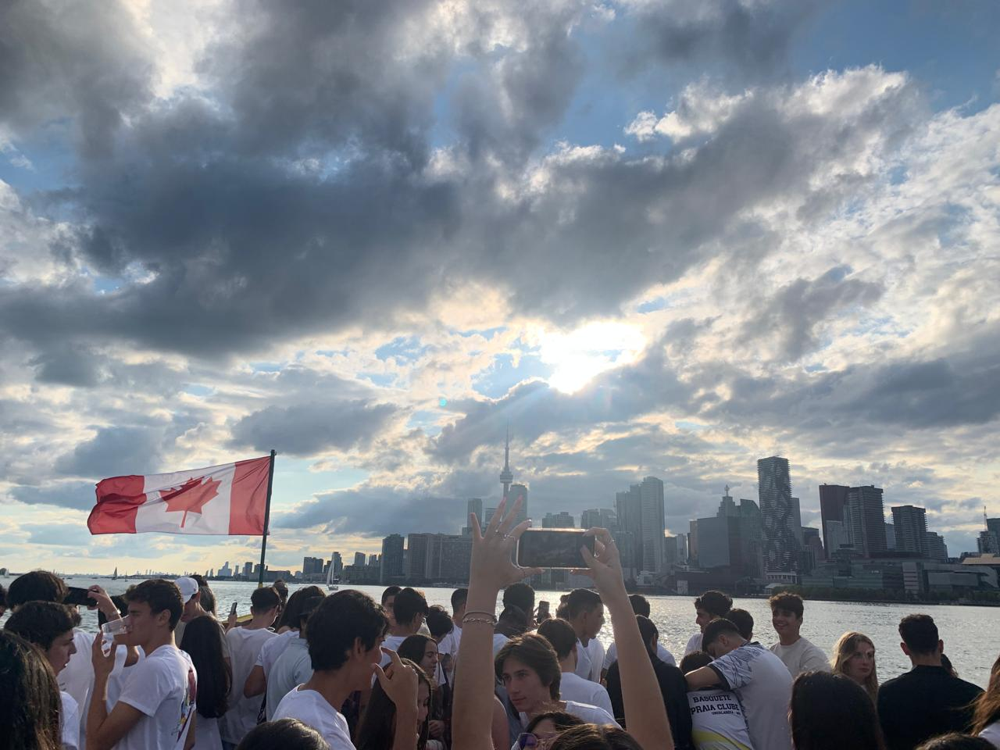
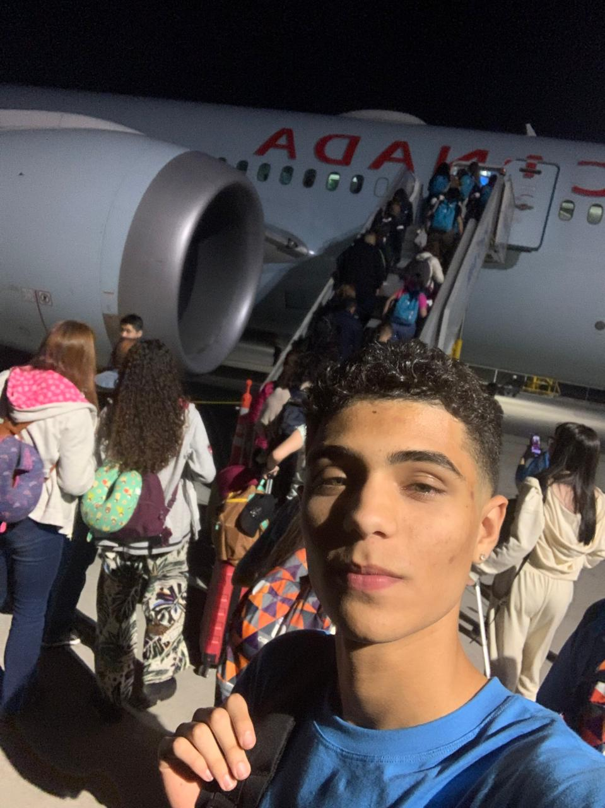
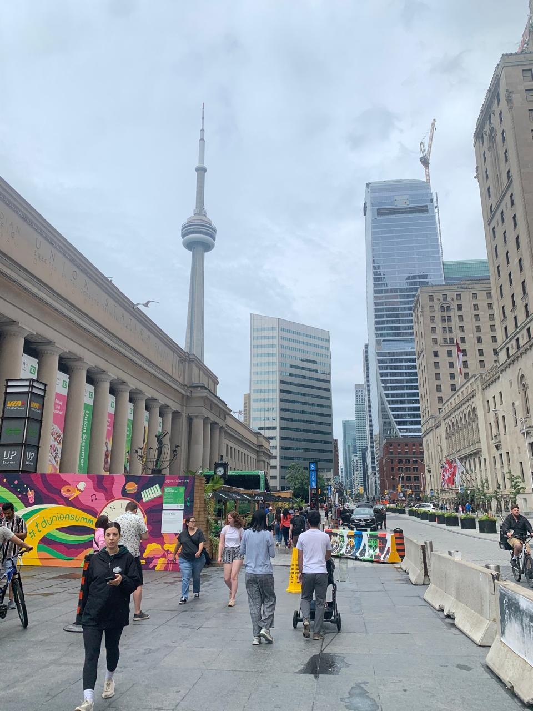
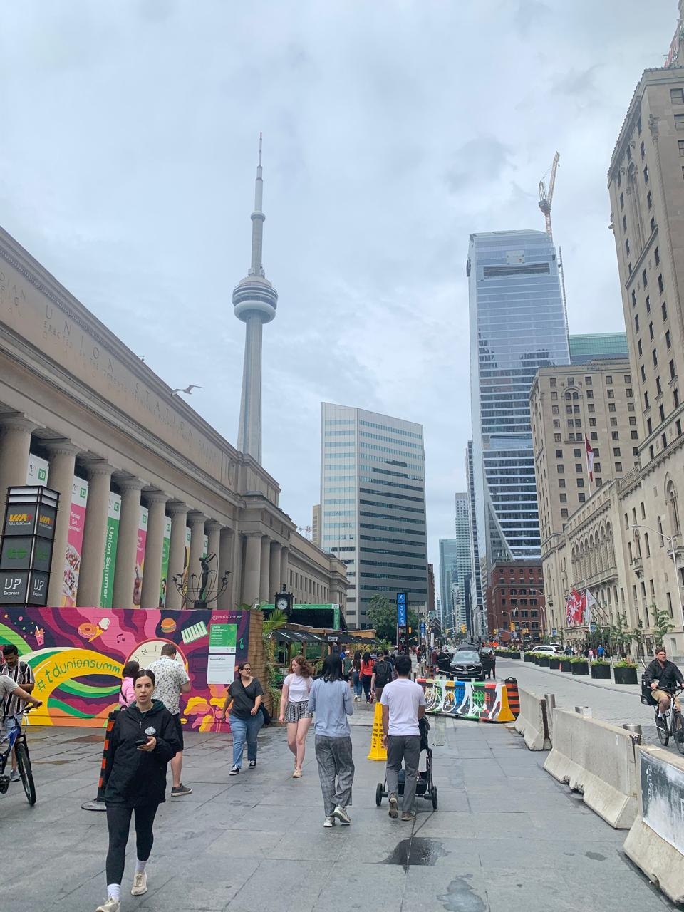

Aprenda

para

A população do Brasil atual é de aproximadamente 212,6 milhões de habitantes
Apenas 5% do Brasil possui algum conhecimento sobre outro idioma.
E apenas 1% domina as 4 habilidadesde qualquer idioma
As pessoas consideradas fluentes são as que dominam as 5 habilidades dos idiomas
• Fala - Speaking
• Audição - listening
• Leitura - Reading
• Escrita - Writing
• Interpretação - Interpretation
E acredite ter conhecimento de apenas 1 idioma além da sua lingua natal
Já te torna uma pessoa com uma habilidade especial
Meu nome é Gustavo, tenho 18 anos e, mesmo com a minha pouca idade, já vivi diversas experiências incríveis, tudo isso graças ao conhecimento de novos idiomas!
Atualmente, falo três idiomas além do meu idioma nativo. São eles: inglês, no qual tenho nível avançado; espanhol, com nível intermediário; e francês, com nível básico.
Tenho um enorme orgulho dessa habilidade, principalmente porque foram os acontecimentos da minha vida que despertaram meu interesse em aprender cada um deles.


Nesta foto, eu tinha 8 anos. Costumo dizer que foi o começo do meu vínculo com os idiomas. Naquela época, tive meu primeiro contato com o inglês. Viajamos para a Disney, fomos em 7 pessoas da minha família, e apenas o meu pai falava outro idioma.
Desde essa viagem, ele percebeu o quanto o idioma era importante para mim e sempre reforçou a ideia de que eu deveria aprender. Por isso, devo muito dessa paixão a ele.
Mas um grande problema surgiu: quando criança, eu não via propósito em aprender outro idioma. Por isso, não tinha foco nem dedicação… até que...
Em 2023, tudo mudou. Tive a oportunidade de fazer um intercâmbio para Toronto. Mas, no início daquele ano, tive uma conversa com meu pai que definiu tudo. Ele me disse:“Você não vai conseguir viajar com o nível de inglês que possui hoje!” Depois disso, mudei completamente a minha rotina. Foram seis meses de resiliência e estudos diários para aprimorar ao máximo o meu inglês antes da viagem. E, bom... deu certo! Minha viagem foi fantástica. Fiz vários amigos de diferentes partes do mundo, utilizei muito o inglês e, com certeza, isso também fez minhas habilidades de relacionamento evoluírem bastante.
 



.jpeg)
 

.jpeg)
.jpeg)
.jpeg)
Até agora, você conheceu um pouco da minha conexão com os idiomas — mas e o francês e o espanhol? Como comecei a aprendê-los? Sobre o espanhol, por ser uma língua parecida com o português, sempre tive mais facilidade no aprendizado. Isso me motivou a estudá-lo com mais naturalidade e leveza. Já o francês tem uma história curiosa. Quando eu estava voltando da minha viagem para Toronto, ouvi dois homens que trabalhavam no aeroporto conversando em uma língua diferente, era fluida, admirável. Fiquei curioso para descobrir que idioma era aquele, mas não conseguia identificar. Então tomei coragem, me aproximei e perguntei. Ele respondeu:“French, my friend.” Desde então, desenvolvi um gosto especial pelo francês — e comecei a estudá-lo ainda no avião, no caminho de volta para casa!
Mas sem um plano, é quase impossível manter constância, disciplina e foco. Isso se reflete em todas as áreas da vida. Foi por isso que decidi desenvolver o meu próprio método para aprender qualquer idioma e sair do básico...
O método que desenvolvi tem como foco principal o desenvolvimento do vocabulário no idioma. Isso porque um vocabulário sólido serve como base para o progresso nos demais pilares da fluência. Com esse método, você será capaz de:
✅ Ler melhor
A leitura é uma das formas mais eficazes de fixar palavras e expandir o vocabulário. Quanto mais você lê, mais fácil se torna memorizar expressões e estruturas da língua.
✅ Falar melhor
A fluência e uma boa pronúncia estão diretamente ligadas a um vocabulário rico. Sem palavras, não há discurso — com elas, você ganha confiança para se expressar com clareza e naturalidade.
✅ Interpretar melhor
A compreensão de textos e conversas depende diretamente do seu repertório de palavras. Um vocabulário amplo melhora sua interpretação e evita mal-entendidos.
Lembre-se: aprender um novo idioma leva tempo. Não existe receita mágica ou método milagroso. O estudo de línguas está diretamente ligado à constância, disciplina e dedicação e esse é o único caminho se você deseja aprender de verdade e levar esse conhecimento para a vida inteira.